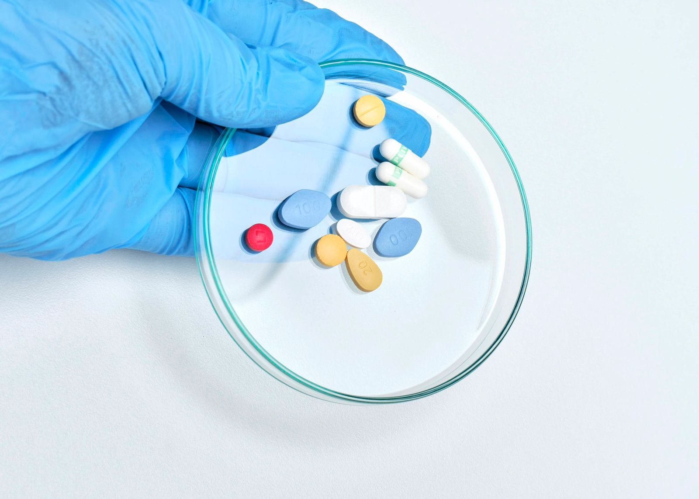
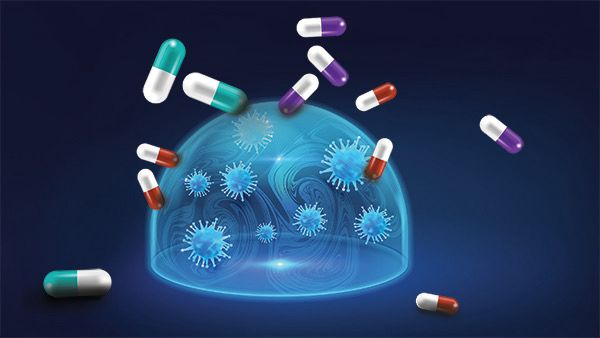
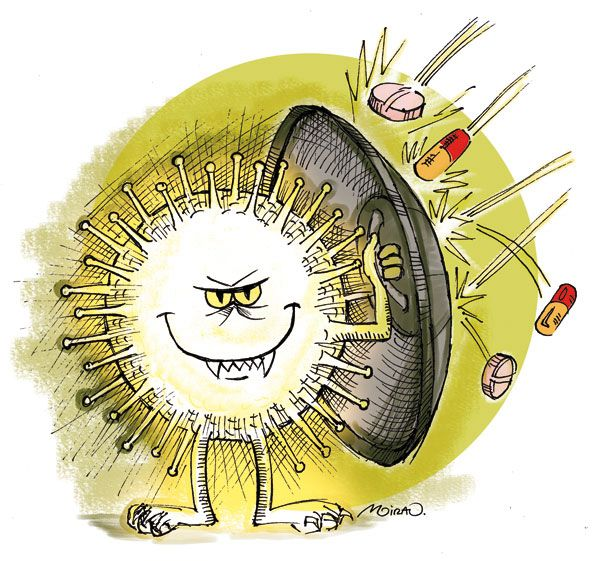
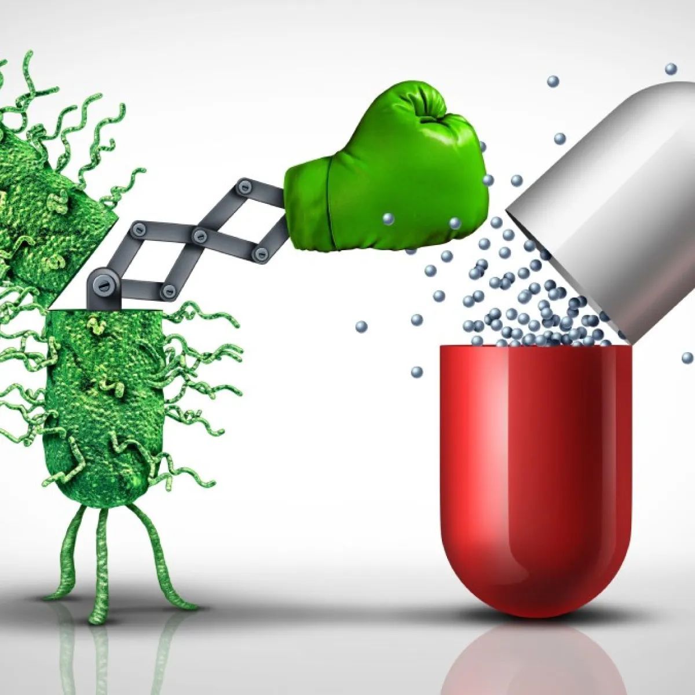
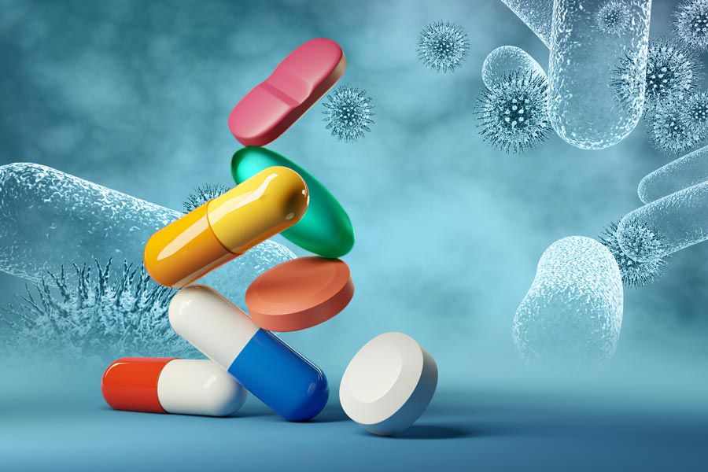
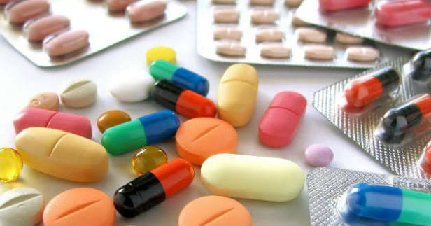

Un desafío global para la salud pública y el laboratorio clínico
Los antibióticos son medicamentos que combaten infecciones causadas por bacterias en los seres humanos y los animales. Sin embargo, la resistencia a los antibióticos ocurre cuando las bacterias mutan y desarrollan la capacidad de resistir los efectos de estos medicamentos diseñados para destruirlas.

La resistencia es un fenómeno natural y evolutivo, pero el comportamiento humano ha acelerado drásticamente este proceso. A continuación, vemos cómo las bacterias desarrollan este "escudo" protector.




Para los profesionales del área de la salud, la detección oportuna es el arma principal. El laboratorio no solo diagnostica, sino que guía el tratamiento médico.
Detener la propagación de estas "superbacterias" requiere medidas estrictas tanto del personal de salud como del público en general:

Esta página web fue desarrollada como evidencia de investigación académica, estructuración digital y divulgación científica.